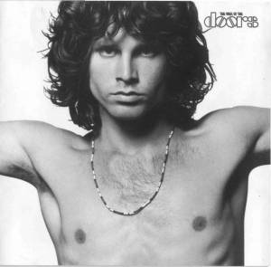
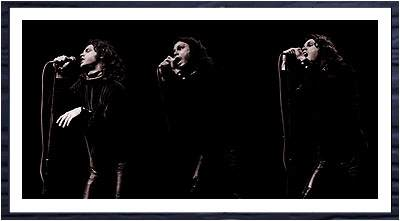
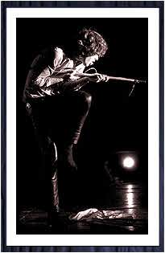
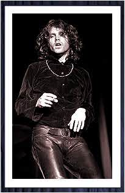
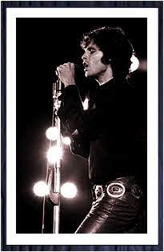
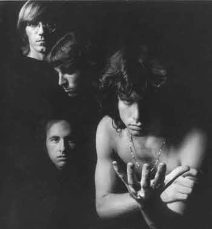
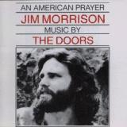

|  |
The DoorsThe question arises, repeatedly, why has the Doors music survived even flourished, into generation after generation when so many other groups of their era have fallen by the wayside? In other words, why the Doors? Why now? Why still? Obviously it has something to do with the unlikely musical elements. Robby Krieger. Not only a flamenco guitarist with a flair for bottleneck but a top-notch songwrier as well. Ray Manzarek. A classically trained pianist (who also wrote and played the basslines on a keyboard bass, keeping them melodic and precise). John Denamore. A jazz drummer with an unbeatable theatrical sensibility. Jim Morrison. The rich bantone with an inborne compositional ability; the electric poet. The combination of these diverse, far-flung musical traits could have been at odds, disastrous. But it wasn't. Instead, it was strange, unique, perfect, it worked. During the very first Doors rehearsal at Manzarek's beachfront rehearsal room in Venice, California, they knew. There was more than a musician's innate sense of communication among them. There was palatable magic. Yet there are other, less concrete yet no less important reasons why the Doors remain so timeless and special in their appeal. The attitude which shaped the music, the foundation itself on which the music stood is one of the most unique and intelligent in all of rock `n' roll. The band's roots werent' merely from an art school, or inspired solely by the music indigenous to black Southern America (although the latter was one influence, among many). The Doors' influences were of a more dramatic nature. Manzarek and Morrison met at UCLA sharing classes in the school's acclaimed cinematography department. The Doors would go on to utilize the timeless, classic elements of film, poetry, literature, theatre, philosophy and music, and combine them all together into a seamless package wrapped with their own particular talents. Antonin Artaud's theory of confrontational performance was to become a cornerstone for Morrison's attitude involving his audience. In literature, Fredrick Neitzsche's philosophy about strength and the nature of tragedy and its relationship to music provided Morrison and thereby the Doors with a direction few other bands were ever aware. The powerful and eclectic list continues.. From the directors Orson Welles and Josef Von Sternberg they received staging and lighting instructions as well as erotic mood and sultry flavour. From the artist/poet William Blake they took their name. Blake had written "When the doors of perception are cleansed, man will see things as they truly are, infinite." Author Aldous Huxiey was sufficiently inspired to title his book detailing his experience with psychedelic drugs "The Doors of Perception". Morrison was impressed enough with both sources to propose the monicker to Robby, Ray and John. Everyone agreed the name and the sources from which it sprang was perfect. From the poets Baudelaire and Rimbaud the Doors sought to create the new language which, as Rimbaud himself wrote, "Gives rhythm to words, speaks directly to and unites souls. The alphabet of the soul! Pristine. Indestructible." The band's goals were as lofty as their inspirations. They wanted to marry rock `n' roll with poetry. They aimed to unite performer and audience by plugging directly into the source of real magic and power, the Universal Mind, which connects us all. They would settle for nothing less. For them that ment no gimmicks, nothing up their sleeve, no elaborate staging or special effects. The Doors constantly courted their music. That is, Morrison courted his music, the band followed. Jim always maintained one cannot simply will the music; the writer or artist's power lie in his ability to receive, not invent. It was the artist's duty to do everything possible to increase his powers of reception. He drank and yelled and pleaded, cajoled and danced in its honour, calling on it to unite the band, to ignite the audience, trying to set the night on fire, once and for all, forever. Manzarek, Krieger and Densmore's brilliance and their ego forfeiture was crucial to the Doors success. Their contribution cannot be underestimated or overpraised. For you see, it was not only what they gave which counts for so much, but what they were willing to hold back as well. Morrison was the trailblazer and to a man they recognized this and they let him lead. Their following was supportive and sympathetic. All four of them knew Jim could not have journeyed alone. He would surely have become lost and lacking in pourpose. It is no mystery why Jim never went solo - he knew he needed the Doors as much as they needed him. The Doors were four and the four were one. It was no mere attitude, it was the reality. It was the only way the spell could be cast, the only possible way for the songs to be born. The musicians were literally able to anticipate the singer during an improvisation and the singer, sensing this, grew in ability and confidence. They became more daring. The Doors muscle flexed. They were so strong they were terrifying. But in that terror was beauty, joy and hope. Sadly, it was the Doors commitment to reality, to the music, which finally did them in. Because Jim Morrison was a man who would not, could not, compromise. Because he would not manufacture or cheapen what he wrote, he could not fake desperation. He was desperate. He was driven, mad to create, mad to be real. Jim Morrison was not hooked to any drug so much as he was addicted to the high of the Doors functioning at their peak, those times when music and musician become one and the audience virtually a part of the band. It was commitment which made this possible and it was commitment which he refused to sacrifice. I think Morrison died chasing his music, trying to capture it forever, to bring it to us, to share with us, to unite and reward us. Little did he know he had already left us with more then we ever had the right to hope for, let alone expect. I love all the songs on this album. Each one of them represent peak
performances of three amazing musiciand and this generation's finest electric poet.
They are timeless now because they were created beyond time then. The music of the
Doors is at once both modern and ancient. It is that simple and it was that difficult. It is
much like the surgeons blade which as it cuts both heals and destroys. It is that powerful.
It causes questions, it creates belief. That is, it is art, I believe, of the highest calibre and
so deserves to be classified as such.
|
|  |
|  |  |  |
|  |
|  |
| AN AMERICAN PRAYER (1978)Album The Book |